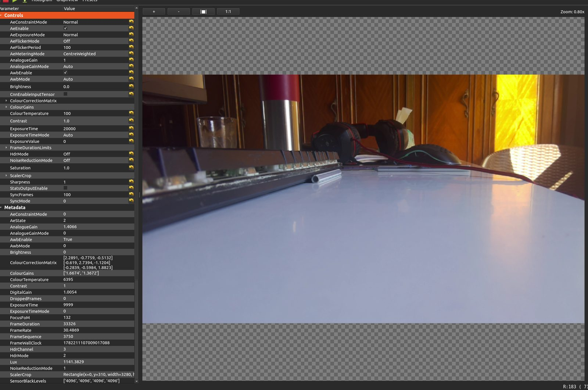
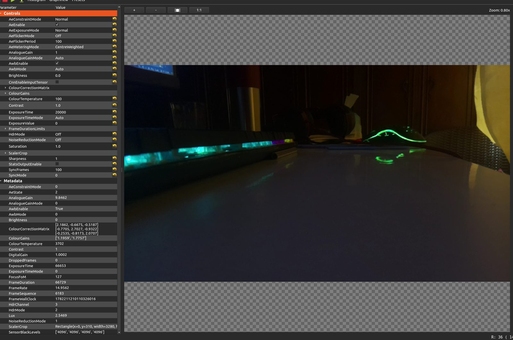
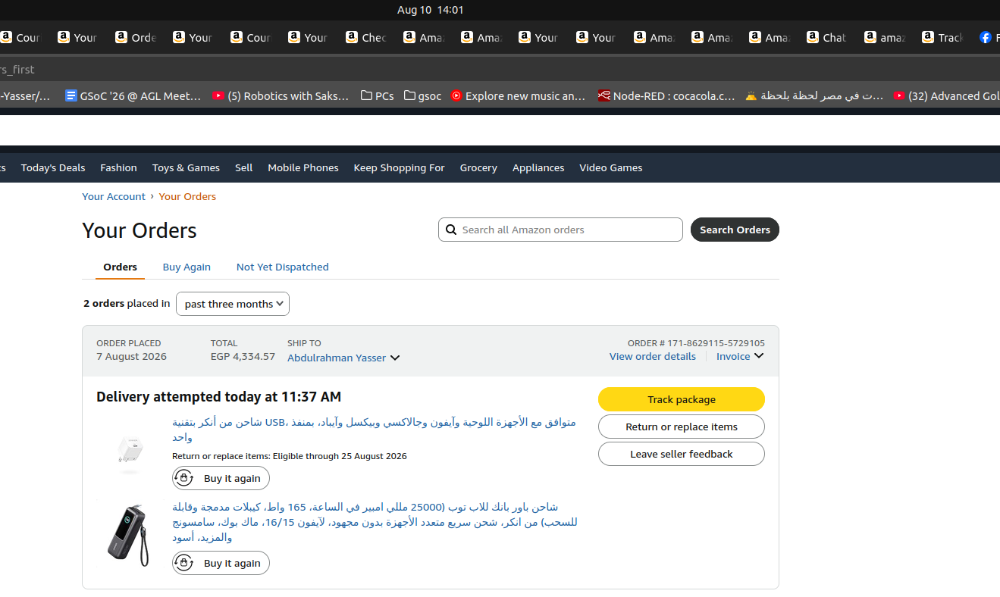

This week
qcam (AeConstraintMode, AeExposureMode, AeEnable) and logged how Lux, exposure time, gain, FPS, and colour temperature actually move together across lighting conditions
rpicam-apps field-capture scripts for the dual-camera rig — independent vs. locked exposure, highlight vs. shadow bias, centre vs. spot metering — ready to run on the car in the street
Details
Before touching the shader more, I wanted to actually see how the camera's auto-exposure behaves
instead of assuming. Spent a while in qcam (libcamera's Qt viewer) pointing the
camera at the same desk under different lighting and different exposure controls, and reading the
per-frame metadata it reports back.
The relationship that matters most for a backup camera: a frame can't be captured faster than its
own exposure time. Normally the camera holds a ~33ms frame period (30 FPS). But once
auto-exposure needs more than 33ms to get a bright-enough image in low light, the frame
period has to stretch to fit it — and FPS is just 1 / frame period. So a dim scene
doesn't just get grainier, it also gets slower. Same desk, lights on vs. lights off:


Same camera, same settings — AeConstraintMode=Normal, AeEnable on, the
controls left untouched — just the room lights switched off. Exposure time went from 10ms to
67ms, gain went up almost 7×, and FPS was cut in half. A few more points along that curve, all
from the same desk, same settings the whole time:
| Setting | Lux | Exposure time | Gain | FPS |
|---|---|---|---|---|
| Normal · AE on | 1141 | 10 ms | 1.4× | 30.5 |
| Normal · AE on | 629 | 17.6 ms | 1.5× | 29.8 |
| Normal · AE on | 157 | 50 ms | 2.0× | 20.0 |
| Normal · AE on | 77 | 54 ms | 4.0× | 18.5 |
| Normal · AE on | 20 | 66.7 ms | 9.8× | 15.0 |
| Normal · AE on | 2.5 | 66.7 ms | 9.8× | 15.0 |
FPS holds at ~30 right up until exposure time crosses that ~33ms ceiling (around 150–160 lux in this room), then drops in lockstep with it. Worth remembering once the rig is tested at dusk/night — the backup camera doesn't just get noisier in the dark, it also gets laggier.
ColourGains/ColourTemperature come from auto white balance, which reacts to what kind of light is lighting the scene, not to how much of it there is. Daylight through the window read around 6400K; the same desk lit only by the room's warm indoor lamp read 3300–3800K, regardless of whether that lamp-lit scene was bright or dim; a phone flashlight pointed at the desk read 3700–4100K. Lux swung by three orders of magnitude across these shots, but colour temperature stayed clustered by which light source was dominant, not by how bright it was.
This time the lighting stayed fixed (same desk, same bright window in frame) and the setting was the thing I changed between shots — each line below is one run:
AeConstraintMode=Custom # baseline — exposes evenly for the whole scene (98% mean, 30ms)
AeConstraintMode=Highlight # protects the blown-out window, rest of frame goes dark (27% mean, 12ms)
AeEnable=false # freezes exposure/gain at their last computed value (9% mean, 23ms)
AeConstraintMode=Shadows # lifts shadow detail, lets the window clip instead (67% mean, 50ms)
AeExposureMode=Short # biases toward shorter shutter + more gain, not more time (11% mean, 36ms)
Highlight pulls exposure down hard to protect the blown-out window instead of
exposing for the room — mean frame brightness dropped from 98% to 27% for the exact same scene.
Shadows does the opposite — pushes exposure up to lift the dark keyboard/desk even if
the window clips, and ran into the same frame-period ceiling as the low-light case above (FPS fell
to ~20 because exposure time hit its cap). Short mode is the odd one out — it doesn't
just shorten exposure, it accepts a noticeably darker (11%) image in exchange for more gain instead
of more time, which is exactly the trade-off worth having once we're capturing while the car is
actually moving, to cut down motion blur.
rpicam-apps doesn't expose AeConstraintMode directly, so these six
throwaway scripts approximate the qcam findings above with flags it does understand — one
variable changed per script, both cameras, same 1640:1232 full-FOV mode, 30s of
video + metadata JSON each run:
run1_independent_auto — OPT: (none) — both cameras full auto, baseline camA/camB drift.run2_locked_manual — OPT: --shutter --gain --awbgains --denoise off — both cameras pinned to identical manual values read off run1.run3a_constraint_highlight — OPT: --awb auto --metering centre --exposure short — biases exposure to protect highlights.run3b_constraint_shadows — OPT: --awb auto --metering centre --exposure long — biases exposure to lift shadows.run4a_metering_centre — OPT: --awb auto --metering centre — centre-weighted metering baseline.run4b_metering_spot — OPT: --awb auto --metering spot — spot metering, small central region only.
Feather and pyramid weight a camera by which direction the fragment is from the car —
each camera just owns a fixed angular slice, regardless of how well it actually sees that ground
point. This week I added a third mode, --blend coverage, that weights by how close
that point is to the edge of the camera's own image instead. The idea: a point that
reprojects near the center of a camera's frame is more trustworthy than one landing right at the
frame's border, since lens distortion and calibration error are both worst at the edges.
Concretely, every fragment already gets a normalized image position (u,v) from the
homography lookup (that's how the shader knows if a camera can see it at all). Coverage mode just
measures how far (u,v) is from that camera's frame edge:
margin = min(u, 1-u, v, 1-v)
Dead-center (u=v=0.5) gives the biggest margin; right at the border gives ~0. That
margin gets smoothed into a weight the same way every other blend mode here does, then combined
across cameras with a plain weighted average — same blend math as feather, just a different weight.
It's not wired into the pyramid mode yet, only feather's pipeline — a follow-up for later.
./libcamera‑dmabuf‑capture ‑‑preview ‑‑blend coverage ‑‑forward‑left cam‑fl.h265 ‑‑forward‑right cam‑fr.h265 ‑‑backward‑left cam‑bl.h265 ‑‑backward‑right cam‑br.h265
